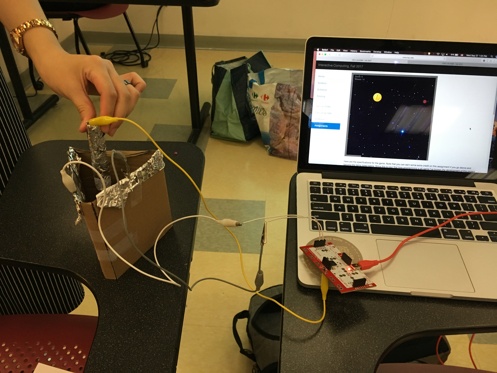

The robber (you) tries to collect treasure while avoiding the cop. Press 'P' to pause the game. You can adjust some of the game's variables through the control panel on the bottom. Have fun!

We tried our best to make a joystick. The "stick" is comprised of a foil wrapped pencil, with the ground attached to it. The walls are covered with foil and are connected to the WASD inputs. That way, if the pencil touches the left wall for example, it completes the circuit and sends an "A" key press to your computer. Similarly, for the right wall.
The inspiration was just your typical cops and robbers game. I thought that just having the cop chase the player was a bit boring (and maybe too easy)... so I added in the flashlight. Coding the flashlight and its interactions was probably the hardest/most annoying part of the game.
The cop "AI" is very simple, it just picks a random x and y and walks towards those coordinates. In order to detect collisions between the player and the flashlight, I first checked if the distance between the cop and player was less than the radius of the flashlight arc. Then, I had to check whether the angle between the player and cop fell within the range: [angle of flashlight - arclength of flashlight / 2, angle of flashlight + arclength of flashlight / 2].
The initial version of the game also didn't have the cop rotate, so the flashlight immediately changed directions. It also had the flashlight pointing either due north, south, east, or west. In the final version, I had adjust the heading of the flashlight based on the cop's x-speed and y-speed. Also, I had to dedicate some frames to rotating the flashlight, which happens as soon as the cop generates a new set of coordinates to walk to.